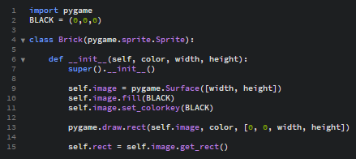
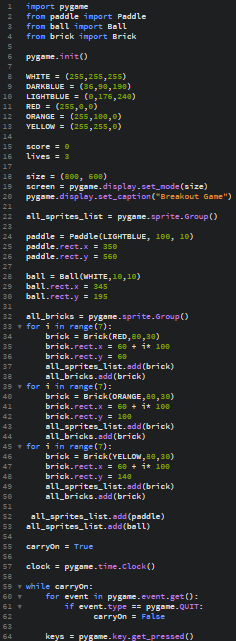
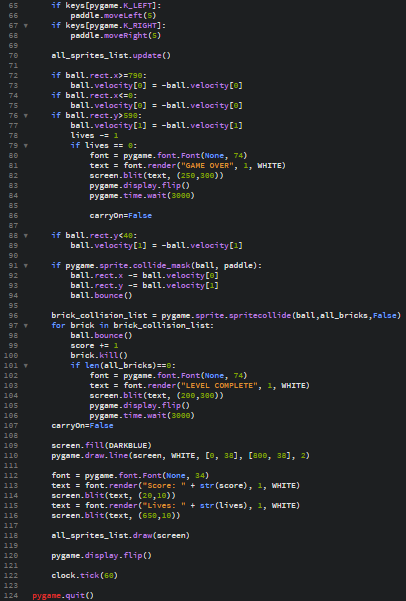

Dodajenje kock za razbijanje
Na koncu moramo še dodati kocke, če se žogica dotakne spodnjega roba izgubimo življenje, če razbijemo vse kocke se prikaže napis "Level complete", če izgubimo vsa življenja se pokaže napis"Game over" in točkovnik, da če razbijemo kocko dobimo 1 točko.
Najprej naredimo novo datoteko in pri njej tudi začnemo z import pygame. Spet dodamo črno barvo.
Naredimo še zadnji class: class Brick(pygame.sprite.Sprite
Napišemo naslednje ukaze:
- def __init__(self, color, width, height):
- super().__init__()
- self.image = pygame.Surface([width, height])
- self.image.fill(BLACK)
- self.image.set_colorkey(BLACK)
- pygame.draw.rect(self.image, color, [0, 0, width, height])
- self.rect = self.image.get_rect()
Takole bi morala izgledati datoteka:

To datoteko shranimo kot brick.py
Ponovno se vrnemo na main.py, kjer ponovno napišemo from brick import Brick.Nato naredimo 3 vrstice kock, ki jih bomo razbijali:
- all_bricks = pygame.sprite.Group()
- for i in range(7):
- brick = Brick(RED,80,30)
- brick.rect.x = 60 + i* 100
- brick.rect.y = 60
- all_sprites_list.add(brick)
- all_bricks.add(brick)
- for i in range(7):
- brick = Brick(ORANGE,80,30)
- brick.rect.x = 60 + i* 100
- brick.rect.y = 100
- all_sprites_list.add(brick)
- all_bricks.add(brick)
- for i in range(7):
- brick = Brick(YELLOW,80,30)
- brick.rect.x = 60 + i* 100
- brick.rect.y = 140
- all_sprites_list.add(brick)
- all_bricks.add(brick)
Pod tistim kamor smo zapisali ukaze kjer naj se žogica odbija od robov moramo še napisati ukaz, da če je število življenj 0 se pokaže napis "Game Over", in da naj se potem čez 3 sekunde program zapre:
- lives -= 1
- if lives == 0:
- font = pygame.font.Font(None, 74)
- text = font.render("GAME OVER", 1, WHITE)
- screen.blit(text, (250,300))
- pygame.display.flip()
- pygame.time.wait(3000)
- carryOn=False
In na koncu še napišemo kaj se zgodi, če se žogica dotakne kocke:
- brick_collision_list = pygame.sprite.spritecollide(ball,all_bricks,False)
- for brick in brick_collision_list:
- ball.bounce()
- score += 1
- brick.kill()
- if len(all_bricks)==0:
- font = pygame.font.Font(None, 74)
- text = font.render("LEVEL COMPLETE", 1, WHITE)
- screen.blit(text, (200,300))
- pygame.display.flip()
- pygame.time.wait(3000)
- carryOn=False
Tako izgleda celotna koda:

Ko to vse napišemo, smo naredili delujočo igro.